Clinique vétérinaire · Trujillo, La Libertad
Services vétérinaires à Trujillo : de la consultation quotidienne au voyage à l'étranger
Nous sommes une clinique dirigée par des vétérinaires agréés. Nous soignons votre chien ou votre chat au quotidien et préparons, étape par étape et sans improviser, tout ce dont il a besoin pour voler à l'étranger.
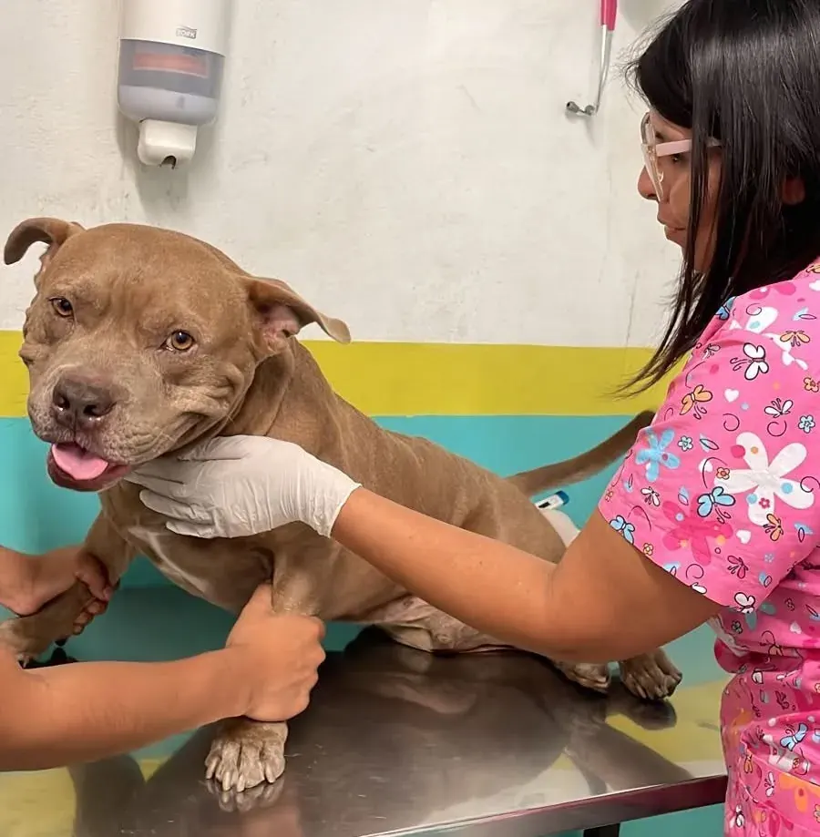
Services médicaux standard
Les soins cliniques de toujours
Les soins de tous les jours pour votre chien ou votre chat, avec le même sérieux que celui que nous mettons à préparer une exportation internationale. Sans tarifs fixes publiés : chaque animal est différent et nous vous donnons le détail sur WhatsApp.
Consultation et examen clinique
Nous examinons votre animal, écoutons le motif de votre visite et définissons un plan. C'est la base de tout le reste.
Voir le détail →Vaccination
Des calendriers de vaccination à jour pour chiens et chats, avec l'enregistrement correspondant pour votre tranquillité et pour les démarches futures.
Voir le détail →Pose de puce électronique
Identification permanente par puce électronique de standard international : la même que celle exigée ensuite pour tout voyage à l'étranger.
Voir le détail →Vermifugation
Interne et externe, adaptée à l'âge, au poids et au mode de vie de votre animal. Un chiot n'est pas la même chose qu'un adulte qui va à la campagne.
Voir le détail →Bilan de santé général
Un contrôle complet pour détecter à temps ce qui ne se voit pas à l'œil nu. Valable à tout âge, et indispensable avant un voyage.
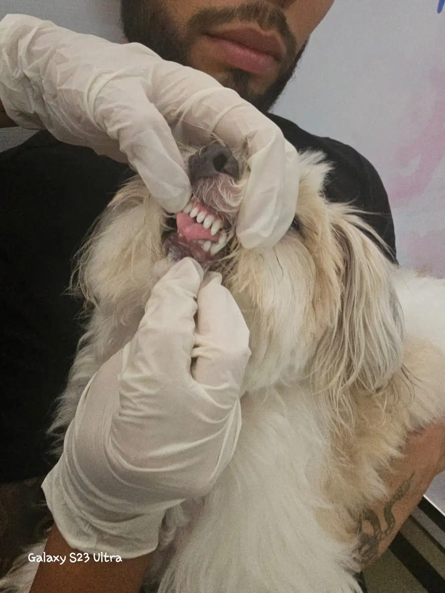
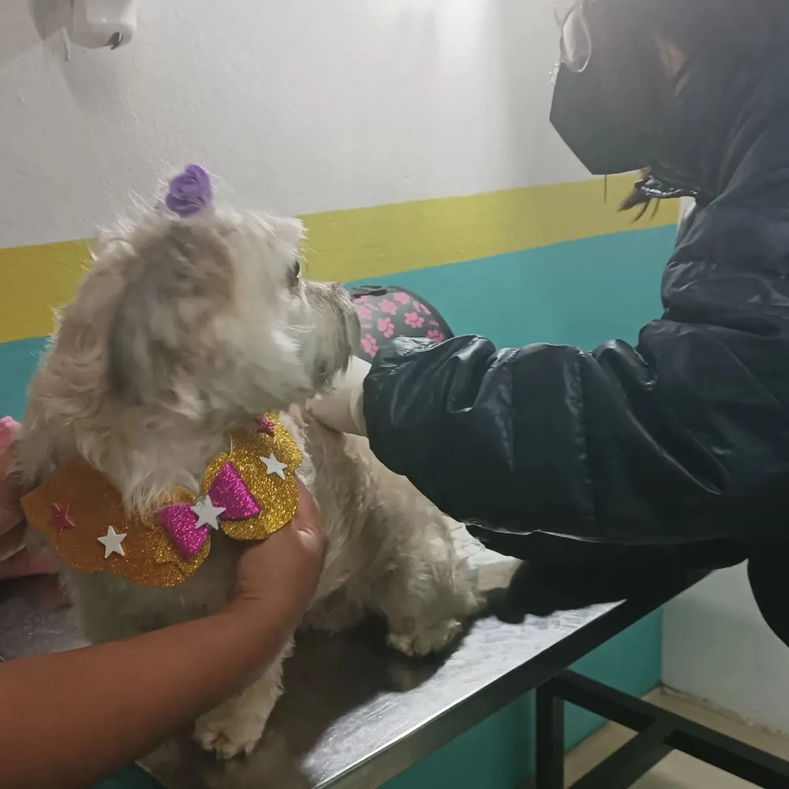

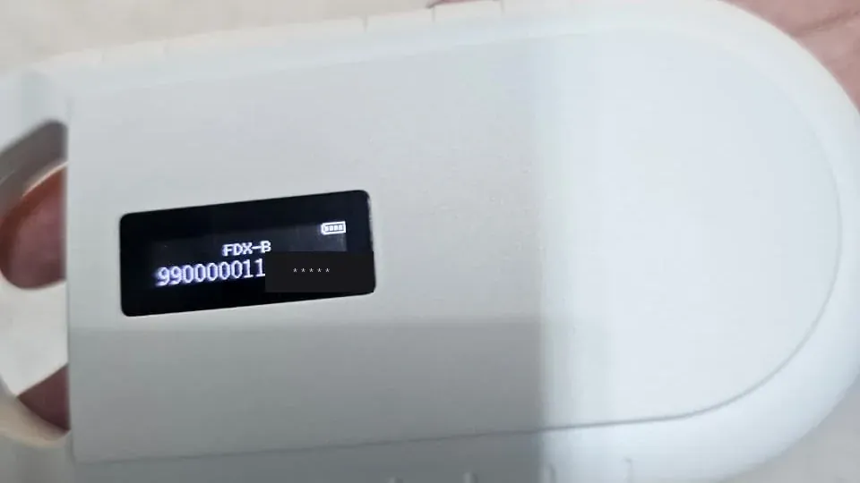
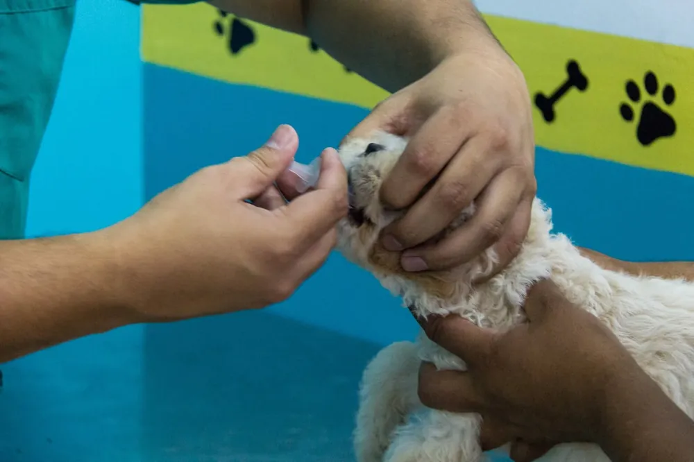
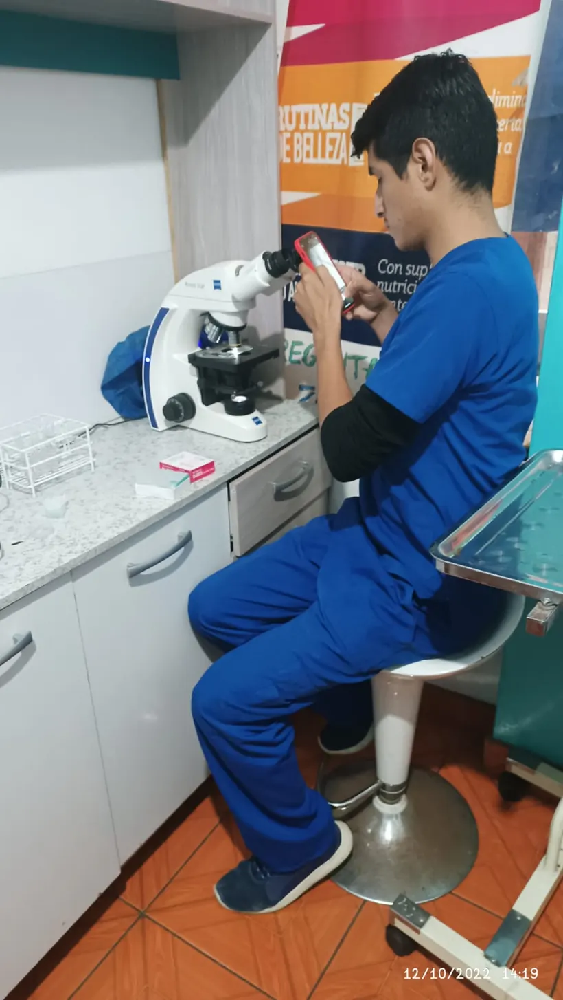
La vétérinaire du quotidien
Nos spécialités cliniques
Au-delà du voyage international, nous sommes votre clinique de tous les jours à Trujillo. Chaque spécialité, avec un jugement clinique et un appui scientifique.
Médecine préventive
Vaccins à jour, vermifugation et bilans pour anticiper la maladie.
Voir le détail →Dermatologie
Allergies, démangeaisons, otites et problèmes de peau : nous cherchons la cause, nous ne masquons pas le symptôme.
Voir le détail →Médecine interne
Quand les symptômes reviennent, nous enquêtons avec méthode jusqu'au véritable diagnostic.
Voir le détail →Ophtalmologie
Œil rouge, ulcères, cataractes et glaucome : l'œil fait mal et évolue vite.
Voir le détail →Endocrinologie
Diabète, thyroïde et Cushing : des changements qui semblent liés à l'âge et qui se traitent.
Voir le détail →Échographie et cardiologie
Échocardiogramme, ECG et échographie pour voir de l'intérieur et bien décider.
Voir le détail →Nutrition
L'alimentation est aussi un médicament : des plans de régime réalistes et mesurables.
Voir le détail →Services médicaux d'exportation
Ce dont votre animal a besoin pour voyager à l'étranger
Emmener votre animal dans un autre pays n'est pas une démarche d'un jour : c'est un processus médical et documentaire avec des échéances qui ne s'improvisent pas. Un examen hors délai peut retarder le voyage de plusieurs mois. Voici ce que nous faisons pour que cela ne vous arrive pas.
Analyse de sang pour la rage
De nombreuses destinations exigent une analyse de sang prouvant que le vaccin antirabique protège réellement votre animal. Nous prélevons l'échantillon et le coordonnons avec un laboratoire agréé ; ce résultat est celui qui déclenche le compte à rebours du voyage.
Voir le détail →Certificat de santé et de vaccination
Le document officiel qui accompagne votre animal. Il est délivré par un vétérinaire autorisé, dans le cadre réglementé par l'État à travers SENASA, après vérification de la puce électronique, de la vaccination et de l'état clinique.
Voir le détail →
Forfaits d'évaluation selon le patient
Tous les patients n'ont pas les mêmes besoins. Selon la race, l'âge et l'espèce de votre animal, nous constituons l'évaluation qui convient avant d'approuver le voyage.
Évaluation cardio-respiratoire avant le vol
Pour les races au museau court (brachycéphales) : Bulldog, Carlin, Shih Tzu, Boston Terrier, Persans et autres. Ils respirent différemment et le vol leur demande davantage, c'est pourquoi nous évaluons leur cœur et leur respiration pour les préparer et qu'ils voyagent en sécurité.
Électrocardiogramme · échocardiogramme · hémogramme · biochimie sanguine · consultation qui interprète l'ensemble
Voir le détail →Bilan gériatrique (plus de 6 ans)
Un patient âgé mérite que l'on confirme qu'il est en mesure d'affronter le voyage. Comprend l'évaluation cardio-respiratoire complète et ajoute un bilan endocrinien.
Tout ce qui précède · bilan endocrinien
Voir le détail →Évaluation féline pour le voyage
Pensée pour les chats qui vont voyager : nous dépistons les maladies que de nombreuses destinations surveillent et confirmons leur état de santé général.
Dépistage de la leucémie féline · dépistage du mycoplasme · hémogramme · biochimie sanguine
Voir le détail →Forfait pour chiots
Pour qu'ils commencent leur vie — et leur voyage — du bon pied, avec le contrôle parasitaire et le calendrier de vaccination correspondant à leur âge.
Analyse parasitologique en série · hémogramme · calendrier de vaccination
Voir le détail →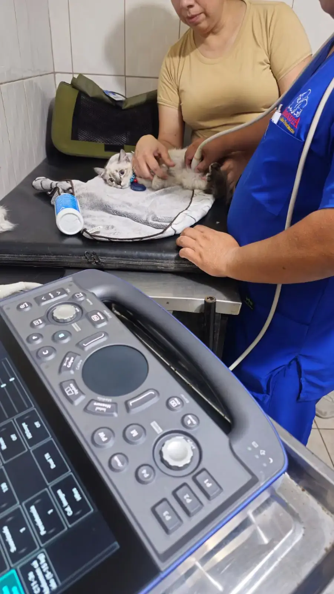
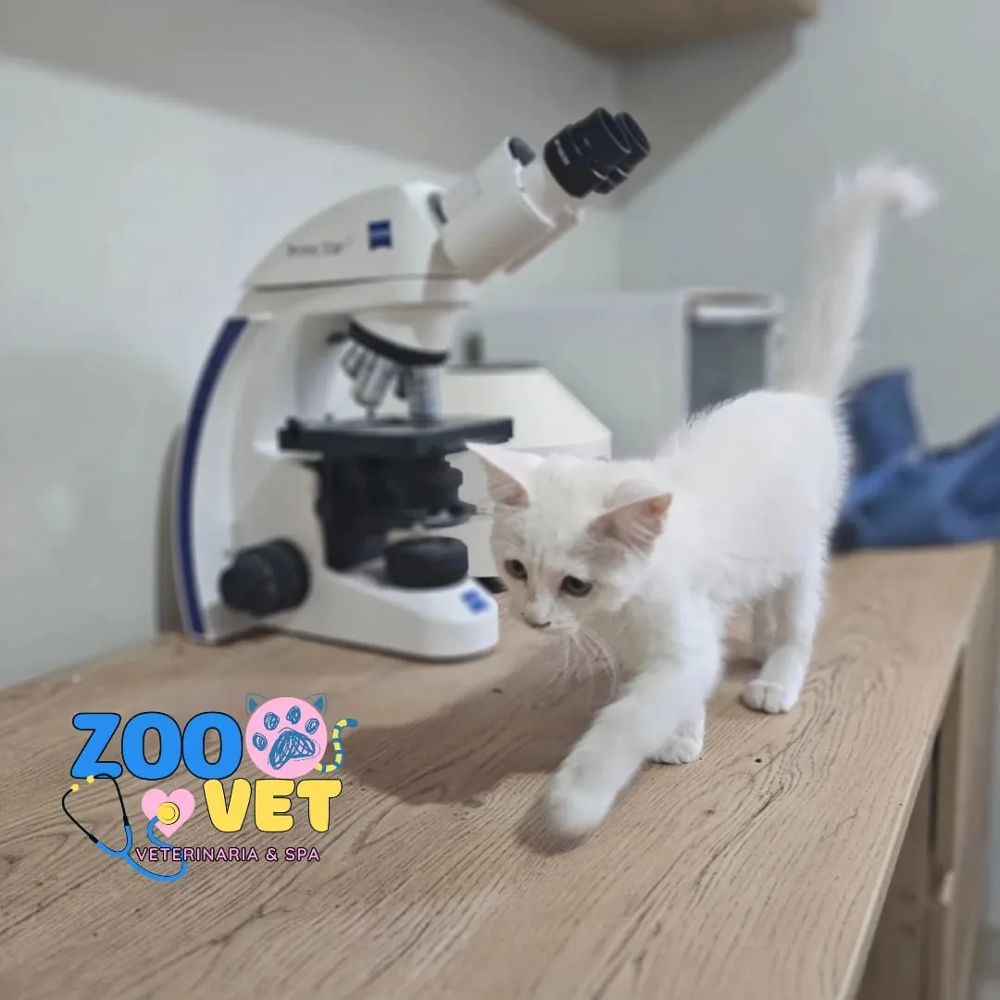
Pourquoi nous faire confiance
Voici comment nous veillons sur le voyage de votre animal
Le bien-être de votre animal, avant tout. Nous l'évaluons en profondeur pour qu'il vole en bonne santé et en sécurité. Si nous détectons quelque chose qu'il vaut mieux traiter avant le voyage, nous vous le disons à temps et le résolvons avec vous, sereinement et avec un plan clair.
Des échéances réelles, sans surprises. Chaque pays change ses règles sans préavis. Nous vérifions la réglementation en vigueur de la destination et établissons un calendrier sur mesure, pour qu'aucun examen ne soit hors délai et que le voyage parte à la date prévue.
Chaque certificat est signé par un vétérinaire agréé. Plus de 13 ans à préparer des voyages et plus de 30 destinations gérées sur 5 continents. Derrière chaque document se trouve un vétérinaire agréé qui en répond.
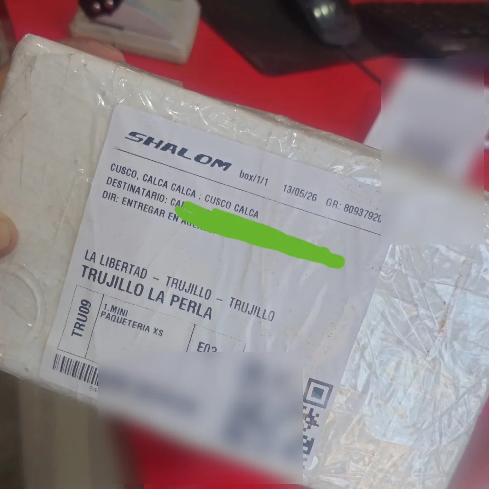
Il n'est pas nécessaire de vivre à Trujillo
Nous recevons des patients et des échantillons de tout le Pérou
Peu importe où vous vous trouvez au Pérou. Nous disposons d'un Réseau de vétérinaires affiliés qui coordonnent avec nous dans différentes régions du pays : des professionnels agréés et habilités, avec une expérience démontrée, un bon accueil client et des installations adaptées, avec une bonne gestion de la chaîne du froid et du laboratoire. Notre méthodologie et notre contrôle qualité garantissent que votre animal reçoive la même exigence de Zoovet Travel, où que vous soyez. Écrivez-nous et nous coordonnons.
Des familles qui l'ont déjà fait
Des cas réels, avec un nom et une destination
Ce sont des familles qui nous ont confié leur voyage. Nous publions leurs photos avec leur autorisation.

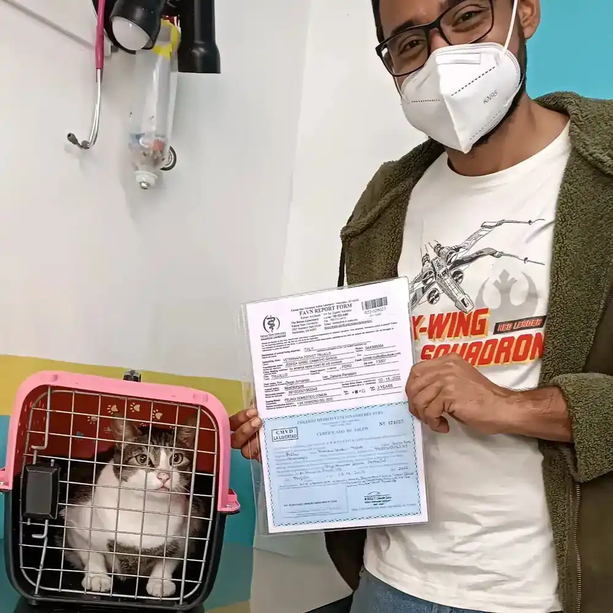
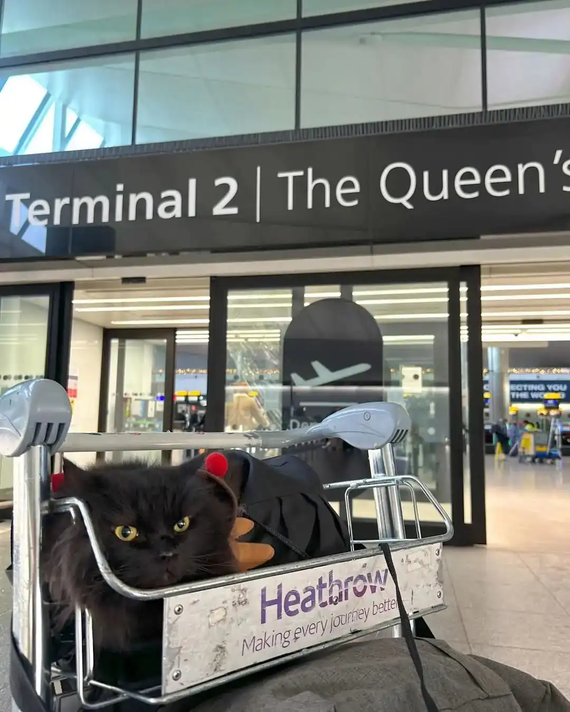
Qui s'occupe de vous
Des vétérinaires agréés, avec un nom et un numéro
Dans une décision qui affecte la santé de votre animal, il importe de savoir qui signe. Voici les professionnels derrière chaque certificat.
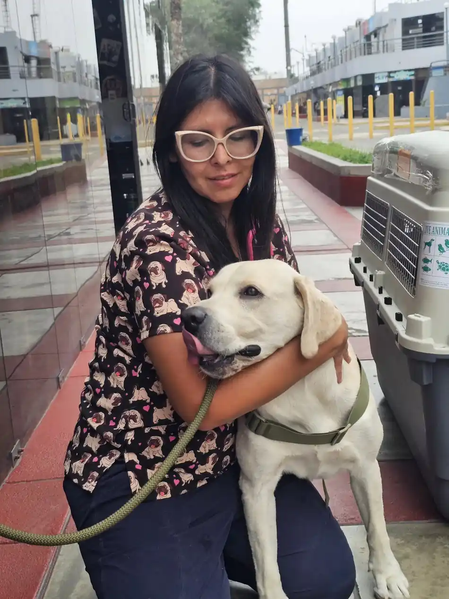
Dra. Jessica Ysabel Camacho García
Vétérinaire et Zootechnicienne · CMVP 12434
Cofondatrice et relectrice scientifique de Zoovet Travel. Spécialisée en médecine du voyage, sérologie de la rage, bien-être animal dans le transport aérien et certification zoosanitaire. Membre de la Commission de Santé Publique du CMVP La Libertad.
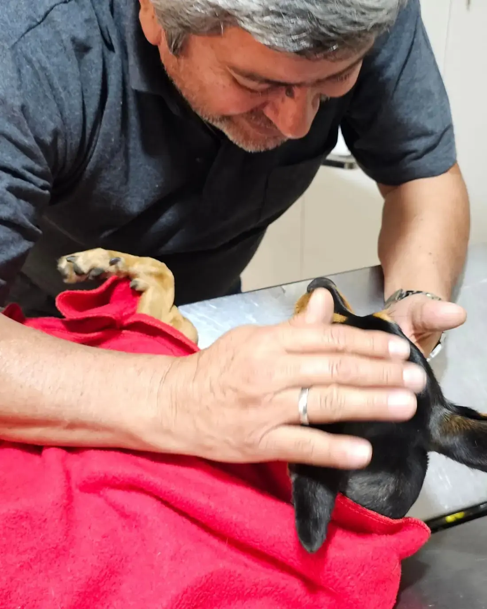
Dr. Víctor Jesús Camacho Paz
Vétérinaire · CMVP 3103
35 ans en santé publique à la Direction Régionale de la Santé (GERESA) de La Libertad, actuellement Coordinateur Régional des Zoonoses et ancien administrateur du Centro Antirrábico de Trujillo. Il révise les protocoles de la rage qui soutiennent nos exportations.
Le premier pas est une conversation
Parlez-nous de votre animal
Écrivez-nous sur WhatsApp en indiquant l'espèce, la race, l'âge de votre animal et — le cas échéant — le pays de destination. Avec cela, nous vous dirons exactement ce dont il a besoin et quels examens conviennent. Sans engagement.
Écrivez-nous sur WhatsAppZoovet Travel
Calle Cuba 241, Trujillo
La Libertad, Pérou
Horaires
Du lundi au samedi, de 9h00 à 19h00
Téléphones
044 366094
+51 979 620 402
+51 922 083 707
Questions fréquentes
Ce qu'on nous demande le plus
Recevez-vous uniquement à Trujillo ?
Il n'est pas nécessaire de vivre à Trujillo. En plus de notre antenne, nous disposons d'un Réseau de vétérinaires affiliés dans différentes régions du Pérou —agréés et habilités, avec une expérience démontrée, un bon accueil client et des installations adaptées, avec une bonne gestion de la chaîne du froid et du laboratoire— qui coordonnent avec nous selon la méthodologie et le contrôle qualité de Zoovet Travel. Écrivez-nous et nous vous dirons comment procéder selon votre ville.
Est-ce vous qui délivrez le certificat d'exportation ?
Oui, dans le cadre réglementé par SENASA et le Colegio Médico Veterinario del Perú. Il est délivré par un vétérinaire autorisé après vérification de la puce électronique, du statut vaccinal et de l'état clinique de votre animal. Ce n'est pas un document qui s'achète ni qui peut être accéléré en contournant les exigences. Vous pouvez voir le détail dans notre service de certificats d'exportation et dans le guide du certificat zoosanitaire auprès de SENASA à Trujillo.
Mon animal a le museau court (brachycéphale), peut-il voyager ?
Cela dépend de son évaluation cardio-respiratoire. Des races comme le Bulldog, le Carlin, le Shih Tzu ou le Persan nécessitent des soins particuliers en vol. Nous réalisons l'évaluation —cœur, respiration et analyses— pour vous orienter avec des données et, si votre animal a besoin d'une préparation avant de voyager en toute sécurité, vous l'indiquer à temps. Pour approfondir avec des preuves, nous avons publié —en trois langues, pour les confrères, la communauté scientifique et le public— notre service d'évaluation avant le vol, l'étude technique sur le transport aérien des brachycéphales et des guides de vulgarisation comme voyager avec un carlin et mon bouledogue français peut-il voler ?.
Combien de temps à l'avance dois-je commencer le processus ?
Cela dépend de la destination. Pour l'Union européenne et plusieurs pays d'Asie, le minimum est généralement de 3 mois en raison de l'attente du résultat de l'analyse de sang pour la rage. Pour l'Australie et la Nouvelle-Zélande, 6 mois ou plus. Écrivez-nous dès que vous avez le pays et la date approximative du voyage. Nous l'expliquons avec les délais réels dans l'analyse de sang pour la rage et dans combien de temps à l'avance commencer le voyage.
Les informations de cette page ont un caractère général. Les exigences d'exportation changent sans préavis et varient selon la destination et l'espèce ; vérifiez-les toujours auprès de l'autorité compétente et de notre équipe avant de voyager.